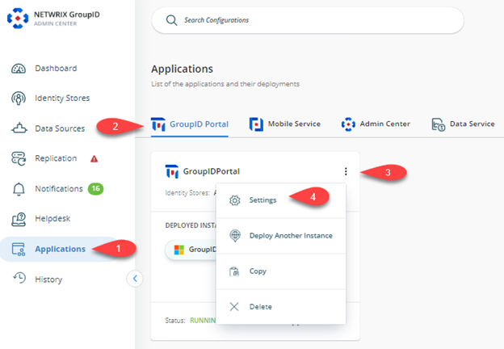
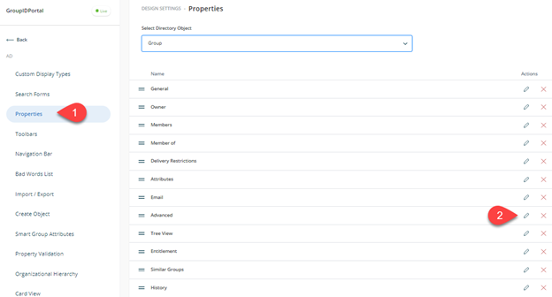
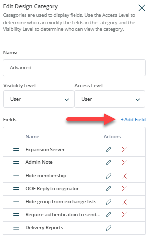
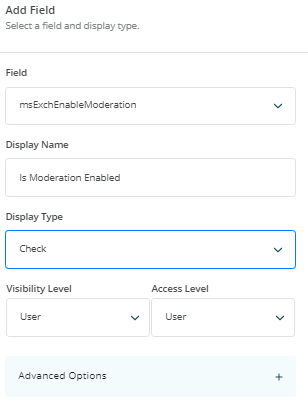
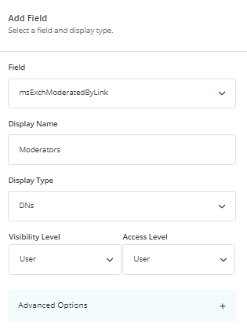
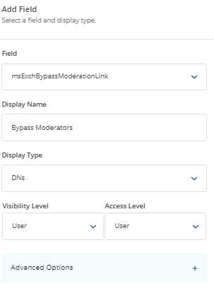
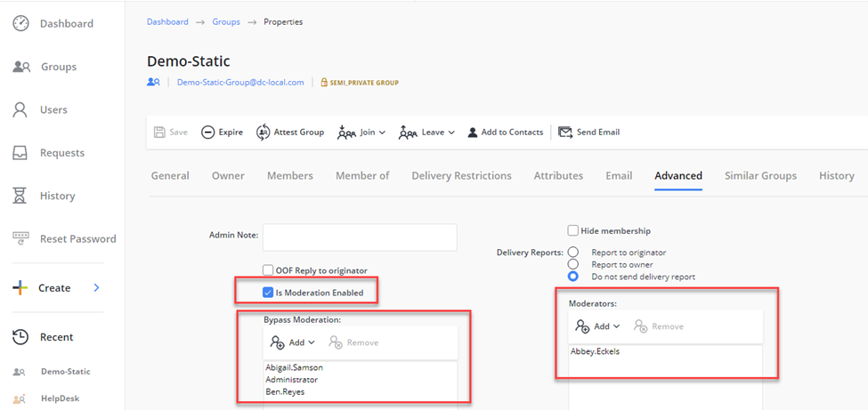

Applies To:
GroupID 11
Business Scenario:
We have set up message approvers/moderators for various distribution lists in our Microsoft Exchange and we would like to view these settings in our GroupID portal. Is there a way to customize the GroupID portal to show such settings?
Solution:
To enable GroupID portal customization for displaying Message Approvers for Distribution Lists using Microsoft Exchange-based Active Directory attributes, you can utilize the following Active Directory attributes associated with Message Moderation for On-Premises MS Exchange:
-
msExchEnableModeration This attribute is used in Microsoft Exchange to enable or disable message moderation for a specific distribution group. When this attribute is set to true, it indicates that messages sent to the distribution group will be subject to moderation, which means they will need approval from a moderator before being delivered to the group members.
-
msExchModeratedByLink This attribute is used to associate a distribution list or security group that contains the list of moderators for a moderated recipient. When this attribute is configured, it links the moderated recipient to the specified distribution list or security group, allowing the members of that group to act as moderators for the recipient.
-
msExchBypassModerationLink This attribute is used to associate a distribution list or security group that contains the list of senders who can bypass the moderation process for a moderated recipient. When this attribute is set, it links the moderated recipient to the specified distribution list or security group, allowing the members of that group to send messages that bypass the moderation process.
By leveraging these attributes, you can create a customized view in the GroupID portal that shows the appropriate Message Approvers for the Distribution Lists. This customization enables you to manage message moderation effectively and efficiently within your organization's Exchange environment.
Steps:
Follow the below-provided instructions to customize the portal:
-
In the GroupID Admin Center Portal, select Self-Service GroupID Portals [required portal] Triple Dot button Settings.

-
Under the Design Settings tab, select the Identity Store you want to customize in the portal.
-
On the Properties tab, select Group from the Select Directory Object list.
-
Select Advanced in the Name list and click Edit.

-
On the Edit Design Category dialog box, click Add Field.

-
Select the mxExchEnableModeration attribute in the Field list, enter the display name as Is Moderator Enabled and set the display type to Check.

-
Click Add on the dialog boxes and then click Add Field again on the Edit Design Category.
-
Select the mxExchModeratedByLink attribute in the Field list, enter the display name as Moderators, and set the display type to DNs.

-
Click Add on the dialog boxes and then click Add Fields again on the Edit Design Category.
-
Select the mxExchBypassModerationLink attribute in the Field list, enter the display name as Bypass Moderators, and set the display type to DNs.

-
Click Add on the dialog boxes and then click the Save button to save the settings.
-
Launch the Group ID portal. You should be able to see the newly added attributes in the Group’s Properties under the Advanced tab.
